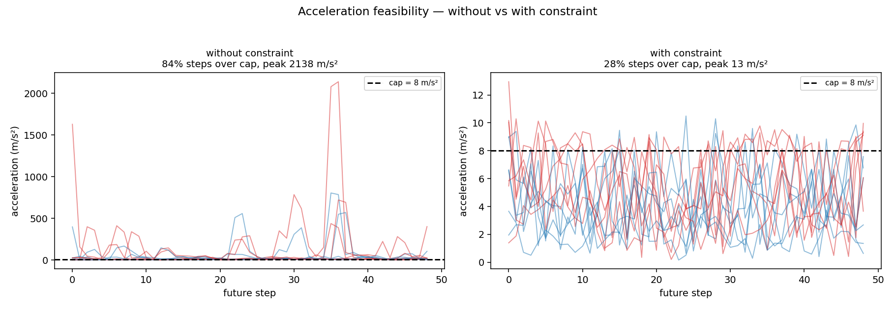
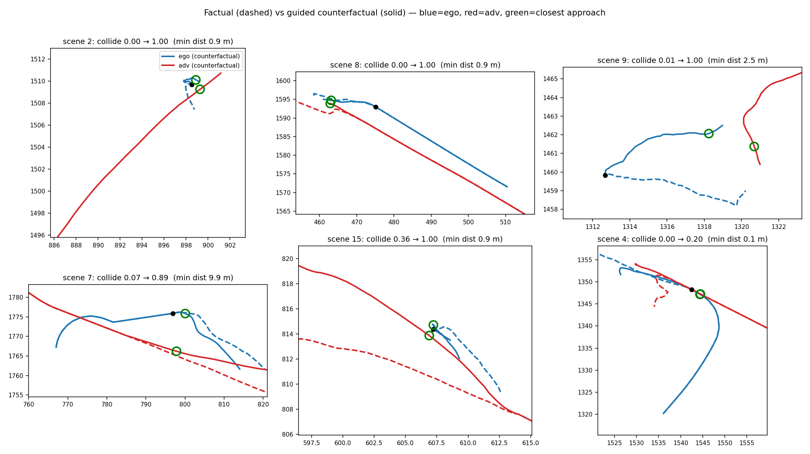

把 DiffSCM 用 Apr11 的新数据重跑了一遍，189 个文件、14638 个场景都能正常读进来，分类器、扩散、
guided 采样整条都通了。然后在采样和训练两个地方都试着加了物理约束，效果确实有改善。下面的结果都是
guidance_scale=5, lambda_step=2 跑的，dt=0.1s，加速度上限取 8 m/s²。
| lambda_accel | Δ碰撞概率 | 对手车终点漂移(m) | 峰值加速度(m/s²) | 超标步占比 |
|---|---|---|---|---|
| 0（关） | 0.451 | 26.8 | 2138 | 74% |
| 5 | 0.300 | 12.4 | 19.3 | 20% |
| 10（推荐） | 0.311 | 12.3 | 13.5 | 16% |
| 20 | 0.328 | 14.1 | 11.3 | 10% |
加了加速度上限之后，超过物理上限的步从 74% 掉到 16%，而碰撞概率的提升基本没受影响。

左边没加约束，加速度能冲到 2000 多，八成的步都超标；右边加了之后基本就贴着 8 这条线走了 （这张只看了碰撞推得最猛的几个场景，所以右边占比比整体的 16% 高一些）。
| 扩散模型 | val loss(保真) | reference 超标步 | 峰值(m/s²) | Δ碰撞概率 |
|---|---|---|---|---|
| baseline | 0.052 | 50% | 224 | 0.451 |
| naive 正则(失败) | 0.210 | 99% | 148 | 0.245 |
| 低噪声正则 | 0.054 | 31% | 154 | 0.443 |
正则只在低噪声那段加。一开始全程加翻车了：高噪声时模型对干净样本的估计本来就乱，硬压加速度 反而把去噪能力搞坏，模型自己采出来更抖（超标率冲到 99%）。改成只在低噪声步加之后，模型自身的超标率 从 50% 降到 31%，保真度（val loss）也没掉。

蓝色是 ego，红色是对手车；虚线是没引导的 factual，实线是 guided 反事实；绿圈是两车最近的地方。 标题里写的是碰撞概率从 ref 到 guided 的变化，可以看到不少场景从差不多 0 被推到了 1。
采样和训练两边加约束都让轨迹更靠谱了，碰撞该推上去还是能推上去。现在用得最顺的是正则模型配上采样 上限 λ=10 这一套，guided 的超标步大概 12%，碰撞概率平均还能提 0.29 左右。下一步可以把训练侧的正则 再加重点试试，看模型自身能不能更可行。